Module Editor
Every window, tab and field of the editor that creates and edits Omnipet modules.
Getting started
A module is a folder inside the game's modules folder: JSON files that describe a device
(its Digimon, evolutions, care rules, battles and items) plus its sprites. The Module Editor edits those files.
It runs on Windows with the .NET Framework 4.8.
Module selector
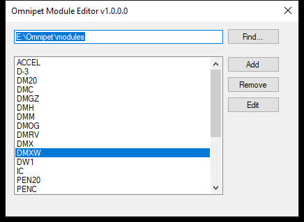
The editor opens on the module selector, which lists the folders of the modules folder. On the first run it
lists the modules folder next to the editor's Module Editor folder; the folder chosen
with Find... is remembered.
| Control | What it does |
|---|---|
| Path box | The modules folder being listed. |
| Find... | Picks the modules folder. Choose the folder that holds the modules, not a module itself. |
| List | One line per module folder. Double-click opens the module. |
| Add | Asks for a folder name ("Module folder name:"), creates the folder with a module.json from the editor's template, its Name set to the folder name, and opens it. An existing folder is refused ("Module already exists."). |
| Remove | Deletes the selected folder and everything in it, after a confirmation. It cannot be undone. |
| Edit | Opens the selected module. |
Making a module
- In the selector, Add a module and name its folder.
- On the Module tab, set the name, the three images and the device's rules (care, battle, death).
- On the Pet tab, Add each Digimon, starting with the egg (stage 0), and give each its sprites.
- Open Edit Evolutions and draw the evolution routes; set each route's requirements and order.
- Add the adventure enemies on the Battle tab, and the unlocks and backgrounds on the Module tab.
- Save (Ctrl+S), then run Tools > Module Report and fix what it lists.
- Documentation > Create Documentation writes the module's guide.
Main window
The editor window has a menu bar, one tab per module file and, at the bottom, Save and Close.
| Tab | What it edits | File |
|---|---|---|
| Module | Module settings, unlocks and backgrounds | module.json |
| Device | The devices offered on the egg screen | devices.json |
| Pet | The Digimon, their sprites and (through Edit Evolutions) their evolutions | monster.json |
| Battle | Adventure enemies and special encounters | battle.json |
| Item | Items | item.json |
| Shop/Currencies | Shops and currencies | shop.json |
| Collection | Cards, card effects and card packs | cards.json |
| Quests/Events | Quests, events, Connect Points and the encounter schedule | quests.json, events.json |
| Passwords | Codes typed in the game's Specials menu | codes.json |
Menus
| Menu item | Shortcut | What it does |
|---|---|---|
| File > Save | Ctrl+S | Saves every tab, the same as the Save button. |
| File > Close | Ctrl+W | Closes the module without saving and returns to the selector. |
| Edit > Edit Evolutions | Opens the evolution editor. | |
| Edit > Enemy Editor | Opens the Fast Enemy Editor. | |
| Edit > Special Encounters | Opens the Special Encounters editor. | |
| Documentation > Create Documentation | Ctrl+G | Writes the module's HTML guide (Report and documentation). |
| Documentation > Open Documentation | Ctrl+Shift+G | Opens the guide in the browser. |
| Tools > Module Report | Ctrl+R | Saves every tab, then checks the module. |
| Tools > Export Sprites | Ctrl+E | Copies the sprite set of every pet and enemy into a folder. |
| Tools > Update ATK Sprites | Copies each pet's attack sprites to the enemies of the same name. | |
| Tools > Generate Pet Index | Renumbers the Index of every pet. | |
| Tools > Import Collection from Module | Merges another module's cards, effects and packs. | |
| Omninet > Account | Ctrl+Shift+A | Logs in to Omninet, creates an account, links the game, logs out. |
| Omninet > Manage Module | Ctrl+M | Publishes, updates or unpublishes this module. |
| Omninet > Module Library | Ctrl+Shift+L | Lists the modules published on Omninet and downloads them. |
| Digimon Database | Compares the module's Digimon with the Digimon Database (details). |
Saving
Save (or Ctrl+S) writes every tab's file and shows "Module saved!". Close never asks: anything not saved is lost. On tabs with a list and a form, the form's own Save button puts the edits into the entry; the main Save then writes the file. Some actions write their file at once.
| Tab | Form edits are kept by | Written to disk |
|---|---|---|
| Module | Directly | Main Save. Clicking an image copies the PNG at once. |
| Device | The form's Save (switching device asks) | At once by the form's Save and by Remove; also by the main Save. |
| Pet | The form's Save; selecting another pet discards the edits | At once by Add, Remove, Paste, the form's Save and Generate Pet Index; also by the main Save. |
| Evolutions | The evolution editor's Save | Main Save (the evolution editor only changes the pets in memory). |
| Battle | The form's Save | At once by Add, Remove, Paste, the form's Save, the Fast Editor and Special Encounters Save, and Update ATK Sprites; also by the main Save. |
| Item | The form's Save; the main Save keeps the item shown | Main Save. |
| Shop/Currencies | As the selection moves | Main Save. No file is made for a module without shops or currencies. |
| Collection | Save (cards, packs), Apply (effect groups), Apply Effect (effects). The main Save keeps the shown card, group and pack, not the shown effect. | Main Save. Art uploads and deletions happen at once. |
| Quests/Events | Directly in the grids | Main Save. |
| Passwords | The form's Save; the main Save keeps the password shown | Main Save. With no passwords, codes.json is deleted. |
Module tab▼
The Module tab has three sub-tabs: Main (the module's settings), Unlocks and Backgrounds. Main shows the three images and the header fields above four inner tabs: Main, Battle & Training, Care & Death and Misc. Every label and field has a tooltip.
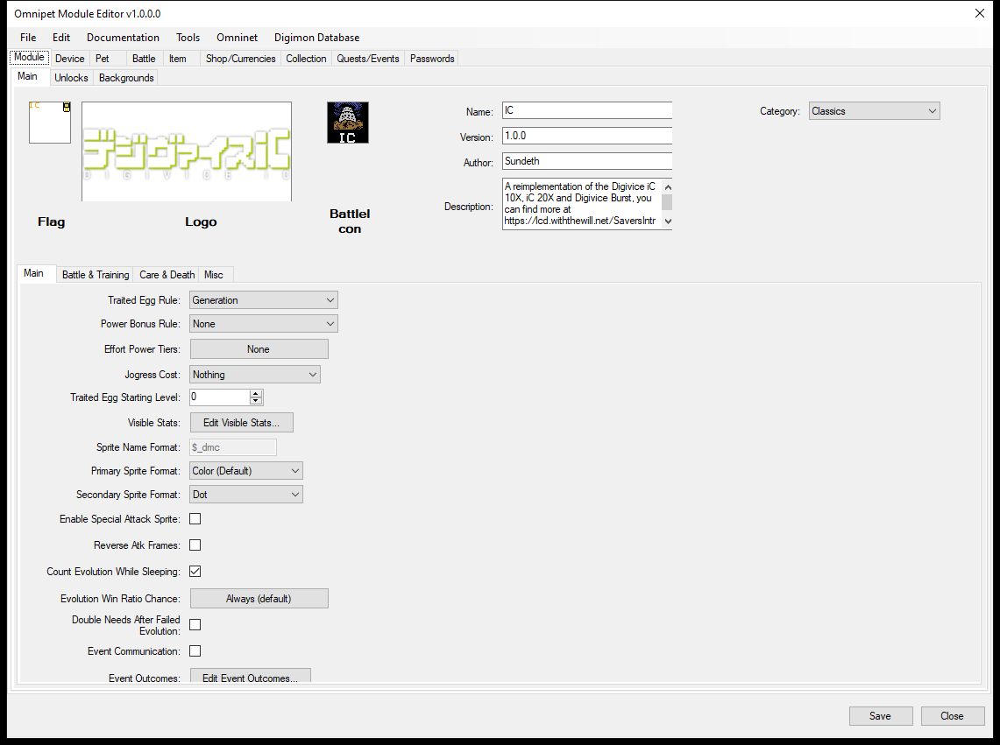
Images and header
Clicking an image box picks a PNG, which is copied over the module's file of that name (no resize, no backup).
| Field | What it does | Values |
|---|---|---|
FlagFlag.png | The module's icon, used in the settings menu and the pet selector. | 48x48 PNG |
Logologo.png | Shown on the egg selection screen and in the Omninet module list. | 480x240 PNG (the box shows it at half size) |
BattleIconBattleIcon.png | The module's entry in the adventure list. Needed with Adventure Mode. | 48x48 PNG |
Namename | The module's name. Its Digimon are registered under it; Omninet refuses a name another user owns. | Text; a new module takes its folder name |
Versionversion | The module's release version, shown on the egg screen and compared by the Module Library. It is not the Digimon's gameplay version. | Text, e.g. 1.0.0 |
Authorauthor | Author text. | Text |
Descriptiondescription | Description text. | Text |
Categorycategory | Which egg-selection button lists the module. | Classics, Modern, Conversions, Custom |
Main
| Field | What it does | Values |
|---|---|---|
Traited Egg Ruletraited_egg_rule | When a dying pet leaves a Traited Egg (table below). | None, Stage V, Stage V Chance, Stage V and Battles, Win Ratio (Stage 4), Win Ratio (Stage 5), Win Ratio (Failed or Aged), Win Ratio (Failed or Aged, Lifetime), Generation, Evolution Timer, Evolution Timer (Area 45), Outlive Lifespan |
Power Bonus Rulepower_bonus_rule | Where battle power above the species' Power comes from (table below). | None, Stage Table, Stage Table + Shaken, Stage Table Xros, Stage Table + G-Cells, Strength and Level, Strength Hearts +16, Strength Hearts +15, Effort, Effort Tiers, Star |
Effort Power Tierseffort_power_tiers | For the Effort Tiers rule: rows of stage, effort and power. Of the rows for the pet's stage (0: every stage), the one with the most effort at or below the pet's adds its power. Effort is one per training and resets on evolving. | Button opening a grid: Stage (0 any), Effort from, Power + |
Jogress Costjogress_cost | The stat both pets must have full to jogress; it is set to 0 on the evolved pets. Across modules each pet pays its own module's cost. | Nothing, DP, Effort, Strength, Hunger |
Traited Egg Starting Leveltraited_egg_starting_level | Level of a pet hatched from a Traited Egg. | 0-100 |
Visible Statsvisible_stats | The stats the Status screen shows. It also switches mechanics: without Strength the pet has no Strength meter; Vital Values and Trophies are tracked only when listed; Stomach shows the hunger fill as hunger/stomach. A module without the key shows none, and opens with none ticked. | Edit Visible Stats... (list below) |
Sprite Name Formatname_format | How a Digimon's name becomes its sprite folder or ZIP name: $ is the name, : becomes _. | Always $_dmc (not editable) |
Primary Sprite Formatprimary_sprite_format | The sprite library searched first: Color in monsters, Dot in monsters_dot, HD in monsters_hidef; the module's folder first, then the shared assets. | Color (Default), Dot, HD |
Secondary Sprite Formatsecondary_sprite_format | The library searched when the primary has no sprite. A Dot module needs a complete secondary. | Color, Dot, HD (never the same as the primary) |
Enable Special Attack Spriteenable_special_attack_sprite | Critical attacks use the Digimon's Special frame and Crit Attack sprite. | Checkbox |
Reverse Atk Framesreverse_atk_frames | Swaps ATK1 with ATK2 and TRAIN1 with TRAIN2 when the sprites load. | Checkbox |
Count Evolution While Sleepingcount_evolution_while_sleeping | The evolution timer runs while the pet sleeps. | Checkbox |
Evolution Win Ratio Chanceevolution_win_ratio_chance | The chance a route with Win Ratio or Total Win Ratio is taken, from the row with the highest ratio at or below the pet's; below every row, 0%. | Rows of win ratio from (%) and chance (%); default 0%: 100% ("Always (default)") |
Double Needs After Failed Evolutionfailed_evolution_double_needs | A pet whose evolution failed (its timer ran out with a Win Ratio route unmet) loses hunger and strength and poops twice as fast, and so does a Stage VI+ form after 48 hours. | Checkbox |
Event Communicationevent_communication | The Digimon Twin's Event Communication. Not used by the game yet. | Checkbox |
Event Outcomesevent_communication_outcomes | Its outcome table (fill hunger, fill strength, item, egg, nothing, each with a chance). Not used by the game yet. | Edit Event Outcomes... |
Traited Egg Rule
| Rule | A Traited Egg is left when |
|---|---|
| None | Never. |
| Stage V | Always, from Stage V. |
| Stage V Chance | 30% from Stage V (DMC, DMGZ, DMH). |
| Stage V and Battles | From Stage V with a 100-battle record (Digimon Twin). |
| Win Ratio (Stage 4) / (Stage 5) | At least that stage and 60% wins. |
| Win Ratio (Failed or Aged) / (Failed or Aged, Lifetime) | Stage V+, 60% wins, and only from a failed evolution or a Stage VI+ form after 48 hours: the current ratio, or the lifetime one. |
| Generation | As Stage V; each generation then evolves an hour earlier from Child up and starts with a point more Reliability, up to eight (Digivice iC). |
| Evolution Timer | 48 hours since the last evolution. |
| Evolution Timer (Area 45) | The same, plus Area 45 cleared (Digital Monster X). |
| Outlive Lifespan | The pet outlives its lifespan (original Pendulum). |
Power Bonus Rule
| Rule | Power added |
|---|---|
| None | Nothing. |
| Stage Table | +5/8/15/25/25 by stage at full Strength; again for a Traited Egg. |
| Stage Table + Shaken | +5/8/15/20/20; again for a Traited Egg; +10 for a shaken egg. |
| Stage Table + G-Cells | +5/8/15/20/20; Traited +5/8/15/15/15; PENGZ Red G-Cells pay the table once more. |
| Stage Table Xros | +5/10/20 across three stages. |
| Strength and Level | +16 (gameplay versions 1-2) or +15; +10 at levels 3, 6 and 9. |
| Strength Hearts +16 | +4 per Strength heart, +16 full; nothing at 99 weight or empty Hunger. |
| Strength Hearts +15 | The Digimon Mini's bands: +0/+4/+8/+15 at Strength 0-3/4-7/8-11/12+. |
| Effort | The original Pendulum's hidden effort (0-40). |
| Effort Tiers | The Effort Power Tiers table. |
| Star | +16 per star (Vital Bracelet). |
Visible Stats
Edit Visible Stats... opens a checklist with Select All and Select None: Age, Weight, Hunger, Stomach, Strength, Trophies, Vital Values, Level, Experience, Mistakes/Condition Hearts, Sleep Disturbances, Overfeed, Injuries, Sicknesses, Effort, Power, DP, Battles, Win Rate, Total Win Rate, Evolution Timer, Sleeps, Wakes, Poop Time, Feed Time, Flags, G-Cells, Reliability, Digisoul, Injury Probability, Next Evolution, Virus.
Battle & Training
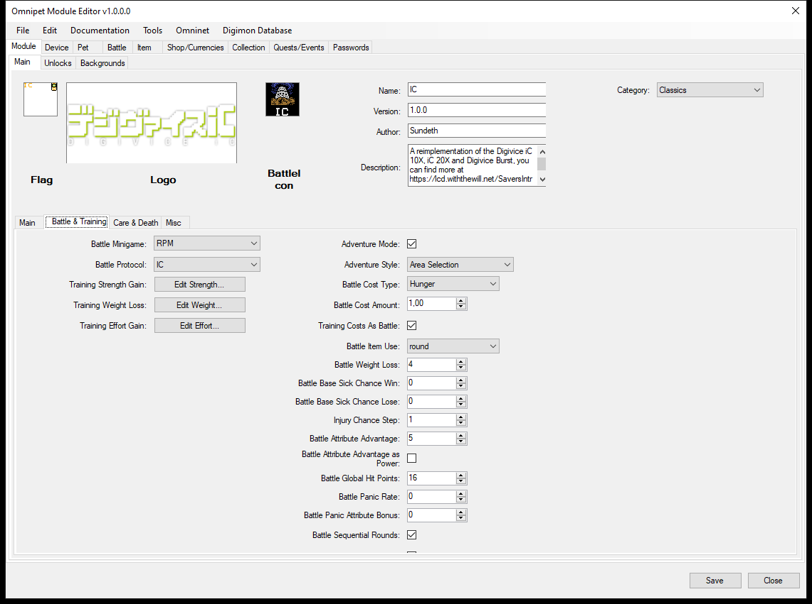
| Field | What it does | Values |
|---|---|---|
Battle Minigamebattle_minigame | The charge minigame of the module's adventure battles; training uses it too. None skips the charge. | None, Dummy Bar, Count Bar, RPM, Count Match Color, Count Match Z, Count Match Classic, Xai Roll+Bar, Xai Bar, Punch, Mogera |
Battle Protocolbattle_protocol | The device's battle protocol, for battles with real devices. Modules with the same protocol can jogress with each other. | None, DMOG, PENOG, DMM, IC, TWIN, DM20, PEN20, DMX, PENZ, DMC, PENC, DMXW |
Training Strength Gaintraining_strength_gain | Strength one training gives at each result. | Bad, Good, Great, Excellent; -1 fills the meter |
Training Weight Losstraining_weight_loss | Weight lost at each training result. | Bad, Good, Great, Excellent |
Training Effort Gaintraining_effort_gain | Effort given at each training result. | Bad, Good, Great, Excellent |
Adventure Modeadventure_mode | Lists the module in the adventure's module selection. Needs BattleIcon.png and enemies on the Battle tab. | Checkbox |
Adventure Styleadventure_style | Area Selection: pick any area and round reached. Next and Reset: only the next battle, or start over. Random: a random area and round. | Next and Reset, Area Selection, Random |
Battle Cost Typebattle_cost_type | What a battle costs. Hunger needs Hunger above 0 even with an amount of 0; Nothing allows battling hungry. | DP, Hunger, Nothing |
Battle Cost Amountbattle_cost_amount | How much of it a battle costs. | 0-99.9, steps of 0.25 |
Training Costs As Battletraining_uses_battle_cost | Every training costs the battle cost (without the battle weight loss); a pet that could not pay for a battle cannot train. | Checkbox |
Battle Item Usebattle_item_use | When battle items (effect status_boost) are chosen, from a list, never from the inventory. area: before an adventure battle; the item's Boost Time counts areas (battles, without sequential rounds). round: before every round; the effect lasts that round. | area, round |
Battle Weight Lossbattle_weight_loss | Weight lost after every battle, on top of the cost. | 0-99 |
Battle Base Sick Chance Winbattle_base_sick_chance_win | Chance (%) that a won battle injures the pet (Skull). A battle never makes a pet sick. | 0-100 |
Battle Base Sick Chance Losebattle_base_sick_chance_lose | Chance (%) that a lost battle injures the pet, plus the protein and disturbance penalties; the form's Injury Prob. rolls too. | 0-100 |
Injury Chance Stepinjury_chance_step | Points a form's Injury Prob. rises after each lost battle and falls after each win (Digivice iC: 1). 0 keeps it fixed. | 0-100 |
Battle Attribute Advantagebattle_attribute_advantage | Points added to the hit rate of an attacker whose Attribute has the advantage, and taken from one at a disadvantage (Vaccine beats Virus, Virus beats Data, Data beats Vaccine). | 0-100 |
Battle Attribute Advantage as Powerbattle_attribute_advantage_power | Adds the advantage to the Power of the side that has it instead (Digital Monster X: +32). | Checkbox |
Battle Global Hit Pointsbattle_global_hit_points | Above 0, every pet and enemy has this HP in the module's battles instead of its own. | 0-100 |
Battle Damage Limitbattle_damage_limit | The most base damage one hit does in the module's own battles (adventure, OMNIPET), before battle bonuses; under 3 it also picks the simple attack animation where the Battle Protocol sets none. Written only when the module has it or it is not 99. | 1-999 (default 99) |
Battle Max Hit Ratebattle_max_hit_rate | The highest hit rate (%) in the module's own battles. Written only when the module has it or it is not 100. | 0-100 (default 100) |
Battle Panic Ratebattle_panic_rate | The Digimon Twin's Panic. Not used by the game yet. | 0-100 |
Battle Panic Attribute Bonusbattle_panic_attribute_bonus | Attribute shift of the Panic rate. Not used by the game yet. | 0-100 |
Battle Sequential Roundsbattle_sequential_rounds | Adventure battles go through the rounds in order. | Checkbox |
Battle Enable Feedingbattle_enable_feeding | Allows feeding after 3 battles of a 5-round area, or 4 of a longer one (DMX/PENZ). Needs Battle Sequential Rounds. | Checkbox |
Battle Keep Counts On Evolutionbattle_keep_counts_on_evolution | Battles and wins carry over an evolution instead of resetting (Digimon Twin). | Checkbox |
Care & Death
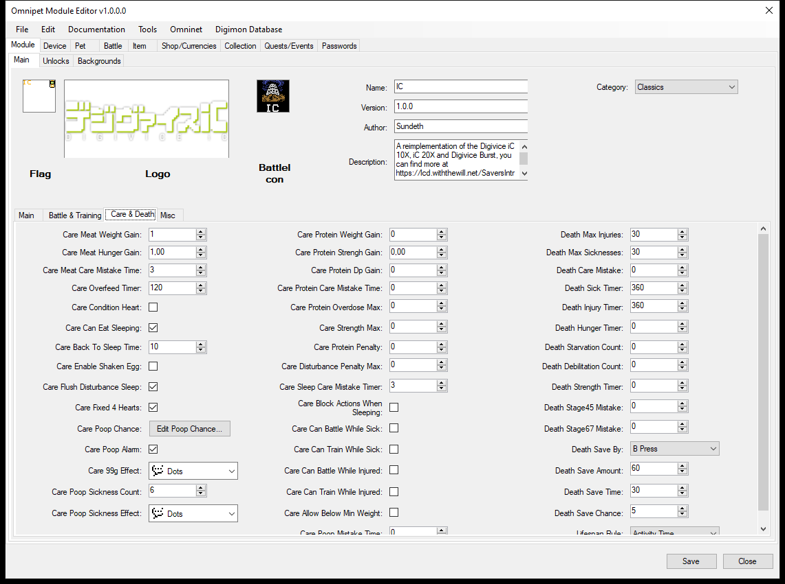
| Field | What it does | Values |
|---|---|---|
Care Meat Weight Gaincare_meat_weight_gain | Weight added by one meat. | 0-100 |
Care Meat Hunger Gaincare_meat_hunger_gain | Hunger restored by one meat. | 0-100, steps of 0.5 |
Care Meat Care Mistake Timecare_meat_care_mistake_time | Minutes with empty Hunger before a care mistake. | 1-1000 |
Care Overfeed Timercare_overfeed_timer | Minutes the pet refuses food after an overfeed. | 0-10000 |
Care Condition Heartcare_condition_heart | Uses condition hearts instead of a mistake count: each care mistake costs a heart. | Checkbox |
Care Can Eat Sleepingcare_can_eat_sleeping | The pet can eat while asleep. | Checkbox |
Care Back To Sleep Timecare_back_to_sleep_time | Minutes before a pet woken in its sleep hours goes back to sleep. 0: it stays awake and calls again for bed. | 0-1000 |
Care Enable Shaken Eggcare_enable_shaken_egg | Eggs can be shaken, for the shaken bonus of the Stage Table + Shaken rule. | Checkbox |
Care Flush Disturbance Sleepcare_flush_disturbance_sleep | Cleaning while the pet sleeps counts as a sleep disturbance. | Checkbox |
Care Fixed 4 Heartscare_fixed_4_hearts | The Hunger and Strength meters always show 4 hearts, whatever the Stomach. | Checkbox |
Care Poop Chancecare_poop_chance | Chance of each poop size. | Single, Double, Triple, Giga (%), totalling 100 |
Care Poop Alarmcare_poop_alarm | The pet calls when it needs to poop. | Checkbox |
Care 99g Effectcare_99g_effect | What reaching 99 weight does: Dots a sickness, Skull an injury, Burpmon (Digimon Twin, at 80), or Nothing. | Nothing, Dots, Skull, Burpmon |
Care Poop Sickness Countcare_poop_sickness_count | Poops on screen that trigger the poop effect. | 0-99 |
Care Poop Sickness Effectcare_poop_sickness_effect | What the poop pile does. | Dots, Skull, Nothing |
Care Protein Weight Gaincare_protein_weight_gain | Weight added by one protein. | 0-100 |
Care Protein Strengh Gaincare_protein_strengh_gain | Strength restored by one protein. | 0-100, steps of 0.5 |
Care Protein Dp Gaincare_protein_dp_gain | DP gained every 4th protein, while DP is below Energy. | 0-100 |
Care Protein Care Mistake Timecare_protein_care_mistake_time | Minutes with empty Strength before a care mistake. | 0-1000 |
Care Protein Overdose Maxcare_protein_overdose_max | Cap of the protein overdose count (one per 4 proteins), which raises the lost-battle injury chance. | 0-100 |
Care Strength Maxcare_strength_max | The most Strength a pet holds, whatever its Stomach (Digimon Mini, Twin: 15). Protein past it still weighs but adds no Strength. 0: the old rules. | 0-99 |
Care Protein Penaltycare_protein_penalty | Percent added to the lost-battle injury chance per overdose point. | 0-100 |
Care Disturbance Penalty Maxcare_disturbance_penalty_max | Cap of the sleep-disturbance penalty (2 per disturbance) added to the lost-battle injury chance. | 0-100 |
Care Sleep Care Mistake Timercare_sleep_care_mistake_timer | Minutes a bedtime call may go unanswered before a care mistake. | 0-1000 |
Care Block Actions When Sleepingcare_block_actions_when_sleeping | A sleepy or sleeping pet cannot battle, eat or train. | Checkbox |
Care Can Battle While Sickcare_can_battle_while_sick | A sick pet (Dots) can battle. | Checkbox |
Care Can Train While Sickcare_can_train_while_sick | A sick pet can train. | Checkbox |
Care Can Battle While Injuredcare_can_battle_while_injured | An injured pet (Skull) can battle. | Checkbox |
Care Can Train While Injuredcare_can_train_while_injured | An injured pet can train. | Checkbox |
Care Allow Below Min Weightcare_allow_below_min_weight | Weight can drop below the species' Min Weight, down to 1 (Digimon World). Evolving still sets the new form's weight. | Checkbox |
Care Poop Mistake Timecare_poop_mistake_time | Minutes a poop may stay before it costs a care mistake and a point of virus (the Poop Unclean Time criterion). 0: never. | 0-1440 |
Care Disturbance Sickness Countcare_disturbance_sickness_count | Every Nth sleep disturbance of the pet's life triggers the disturbance effect. 0: never. | 0-100 |
Care Disturbance Sickness Effectcare_disturbance_sickness_effect | What it does. | Dots, Skull, Nothing |
Care Needs Decay While Sleepingcare_needs_decay_while_sleeping | Hunger and Strength keep draining during sleep (Digimon Twin). | Checkbox |
Death Max Injuriesdeath_max_injuries | Injuries (Skull) in one form that kill. 0: none. | 0-100 |
Death Max Sicknessesdeath_max_sicknesses | Sicknesses (Dots) in one form that kill, counted apart from injuries. 0: none. | 0-100 |
Death Care Mistakedeath_care_mistake | Care mistakes that kill. 0: none. | 0-100 |
Death Sick Timerdeath_sick_timer | Awake minutes a sickness may go untreated before death. | 0-10000 |
Death Injury Timerdeath_injury_timer | Awake minutes an injury may go untreated before death. | 0-10000 |
Death Hunger Timerdeath_hunger_timer | Awake minutes with empty Hunger before death. 0: off. | 0-10000 |
Death Starvation Countdeath_starvation_count | Hunger drains that find the meter empty before death; a full meter resets it. 0: off. | 0-100 |
Death Debilitation Countdeath_debilitation_count | The same for Strength (Xros Wars Color: 18). | 0-100 |
Death Strength Timerdeath_strength_timer | Awake minutes with empty Strength before death. 0: off. | 0-10000 |
Death Stage45 Mistakedeath_stage45_mistake | Care mistakes that kill a Stage IV-V form once its evolution time has passed. 0: off. | 0-100 |
Death Stage67 Mistakedeath_stage67_mistake | Care mistakes that kill a Stage VI+ form after 48 hours in the form. 0: off. | 0-100 |
Death Save Bydeath_save_by | How a dying pet is saved: B presses or shakes; Nothing, it dies. | Nothing, B Press, Shake |
Death Save Amountdeath_save_amount | Presses or shakes the save needs. 0: no save. | 0-999 |
Death Save Timedeath_save_seconds | Seconds to make them in; out of time, the pet dies. | 1-600 |
Death Save Chancedeath_save_chance | Chance (%) the pet lives once they are made (Digivice iC 5, Pendulum Progress 50, most devices 100). | 0-100 |
Lifespan Rulelifespan_rule | How a life ends. None: it lives on. Activity Time (Digivice iC): a form that cannot evolve 2 hours after its evolution time, or at 144 hours without one, goes near death through the death save. Old Age (Digimon World): it dies Death Old Age days into its life. Age 5 (Xros Wars Color): from 5 days old, Hunger and poop come twice as fast and 16 care mistakes in one form kill. Evolution Window (Stage IV+ Pendulum Z, Stage V+ Digital Monster X): from that stage a form evolves only when its evolution time comes; with no route met then it fails for good. | None, Activity Time, Old Age, Age 5, Evolution Window (Stage IV+), Evolution Window (Stage V+) |
Death Old Agedeath_old_age | Days of life for the Old Age rule (asleep and awake, out of the Freezer). The pet cannot be saved. | 0-999999 |
Misc
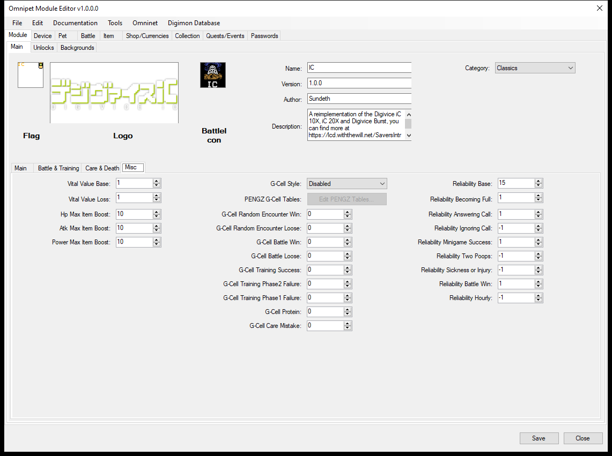
| Field | What it does | Values |
|---|---|---|
Vital Value Basevital_value_base | Vital Values gained per hour while well fed and healthy (when Vital Values is a visible stat). | 0-1000 |
Vital Value Lossvital_value_loss | Vital Values lost per minute while hungry, out of Strength or unwell. | 0-1000 |
Hp Max Item Boosthp_max_item_boost | Cap of the permanent HP bonus from items. | 0-1000 |
Atk Max Item Boostatk_max_item_boost | Cap of the permanent attack bonus from items. | 0-1000 |
Power Max Item Boostpower_max_item_boost | Cap of the permanent power bonus from items. | 0-1000 |
G-Cell Stylegcell_style | The G-Cell system. DMGZ: one 0-472 point meter (14 Blue cells, then Yellow and Red) paid by the flat values below. PENGZ: 14 cells sized by stage, Blue to 7 and Red from 8, paid by the PENGZ tables. G-Cell points reset on evolution. | Disabled, DMGZ, PENGZ |
| PENGZ G-Cell Tables | The PENGZ style's points per cell and its gains by stage (care mistake or empty-Strength call, battle win and loss, encounter win and loss), training gain by result, the Anguirus training and versus battles against another module's pet. "PENGZ values" restores the device's values. Enabled with the PENGZ style only. | Edit PENGZ Tables... |
G-Cell Random Encounter Win / Loosegcell_random_encounter_win, _loose | DMGZ: points for a won or lost random encounter. | -999-999 |
G-Cell Battle Win / Loosegcell_battle_win, _loose | DMGZ: points for a won or lost battle. | -999-999 |
G-Cell Training Successgcell_training_success | DMGZ: points for a successful training. | -999-999 |
G-Cell Training Phase2 / Phase1 Failuregcell_training_phase2_failure, phase1 | DMGZ: points for a training failed in its second or first phase. | -999-999 |
G-Cell Proteingcell_protein | Points per protein (DMGZ and PENGZ). | -999-999 |
G-Cell Care Mistakegcell_care_mistake | DMGZ: points per care mistake. | -999-999 |
Reliability Basereliability_base | Starting Reliability of a first-generation pet. 0 disables Reliability. | 0-31 |
| Reliability Becoming Full | Change when feeding fills Hunger. | -31-31 (iC: +1) |
| Reliability Answering Call | Change when a call is answered. | -31-31 (iC: +1) |
| Reliability Ignoring Call | Change when a call runs out unanswered. | -31-31 (iC: -1) |
| Reliability Minigame Success | Change on a successful minigame. | -31-31 (iC: +1) |
| Reliability Two Poops | Change for every two uncleaned poops. | -31-31 (iC: -1) |
| Reliability Sickness or Injury | Change when a sickness or injury begins. | -31-31 (iC: -1) |
| Reliability Battle Win | Change after each won battle. | -31-31 (iC: +1) |
| Reliability Hourly | Change every 60 minutes. | -31-31 (iC: -1) |
Unlocks
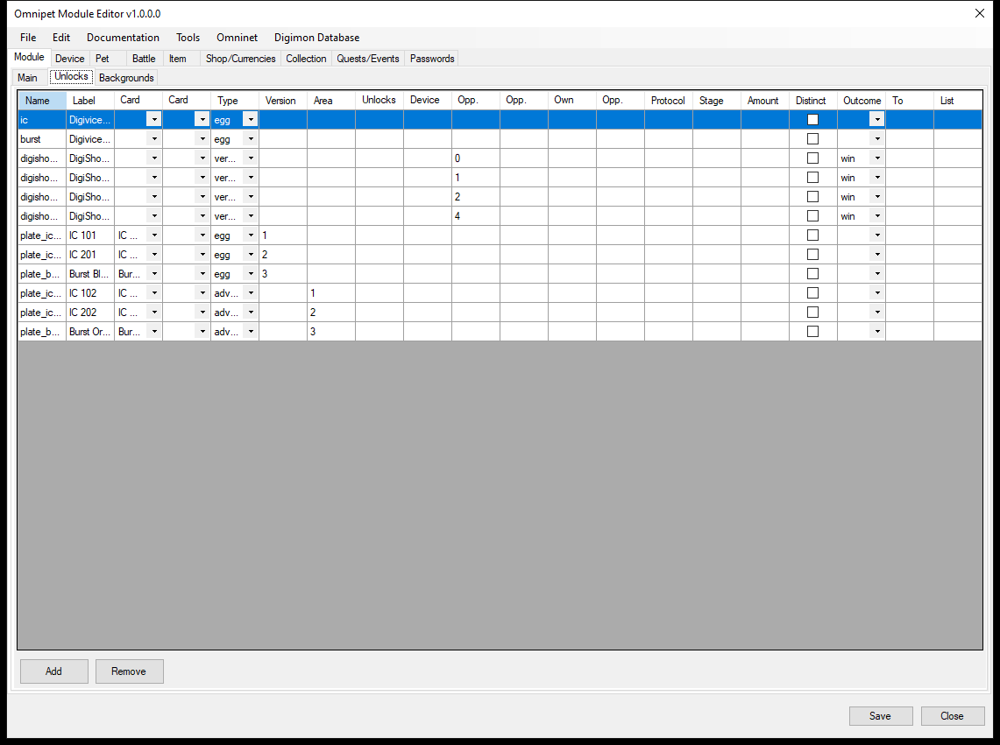
Unlocks are permanent, module-wide progress: eggs, areas, backgrounds and anything a pet's Special Key or a route names. Add creates a row (type egg); Remove deletes the selected row without asking. Every column is shown for every type; each type reads only the columns below.
| Column | What it does | Values |
|---|---|---|
Namename | The unlock's key. A pet's Special Key, a route's Unlock and a background are matched to it exactly. | Text, e.g. area_7_ver_1 |
Labellabel | Shown to the player ("<Label> unlocked!"). | Text |
Card Rewardcard | A Collection card given the first time the unlock is earned. | (none) or a card |
Card Pack Rewardcard_pack | A card pack opened the first time the unlock is earned. | (none) or a pack |
Typetype | How it is earned (table below). | egg, adventure, evolution, digidex, battle, group, pvp, versus, encounter |
Versionversion | Gameplay version for egg, adventure and versus; also scopes Unlocks Area. Empty: every version. | Number or empty |
Areaarea | adventure: the area whose clear earns it. | Number |
Unlocks Areaunlocks_area | An adventure area kept shut until this unlock is held. | Number; empty or 0 for none |
Device Ver.device_version | versus: this side's device version (Device tab), not the gameplay version. | Number |
Opp. Device Ver.opponent_device_version | versus: the other side's device version; either orientation of the pair counts. | Number |
Opp. Device Vers.opponent_device_versions | versus: any of these devices (used instead of the column before). | "0,1,2" |
Own Speciesown_names | versus: this side's Digimon, any of the list. Empty: any. | Names separated by ; |
Opp. Speciesopponent_names | versus: the other side's Digimon. Empty: any. | Names separated by ; |
Protocolprotocol | versus: the battle format the connection must be fought on; it also lets Versus battles against another module's pet count. | Text, e.g. PENC, DMC |
Stagestage | evolution: earned by reaching any Digimon at or above this stage. | 0-8 |
Amountamount | The count to reach (digidex, battle, pvp; versus: battles; encounter: Friends). | Number |
Distinctdistinct | versus: counts different opponent devices instead of battles. | Checkbox |
Outcomeoutcome | versus: win counts won battles only; empty counts any. | empty, win |
Toto | evolution: reaching any of these Digimon earns it. Click the cell to pick them. | Pet list |
Listlist | group: every unlock listed must be held. Click the cell to pick them. | Unlock list |
| Type | Earned when |
|---|---|
| egg | An egg of Version hatches (empty Version: any egg). This does not make the egg available; Special and Special Key on the Pet tab do. |
| adventure | Area is cleared by a pet of Version, or a beaten enemy's Unlock names it. |
| evolution | A pet reaches one of To, or any Digimon at or above Stage. |
| digidex | Amount distinct Digimon have been raised. |
| battle | Amount total victories. |
| group | Every unlock in List is held. Several rows with the same Name mean any one of their lists. |
| pvp | A party pet has Amount connection wins. |
| versus | Connection battles (DCom, Versus) matching the versus columns: one, or Amount of them. Several rows with the same Name mean any one of them. |
| encounter | A beaten special encounter or recruit names it in its Unlock, or, with Amount, that many Friends have joined. |
Backgrounds
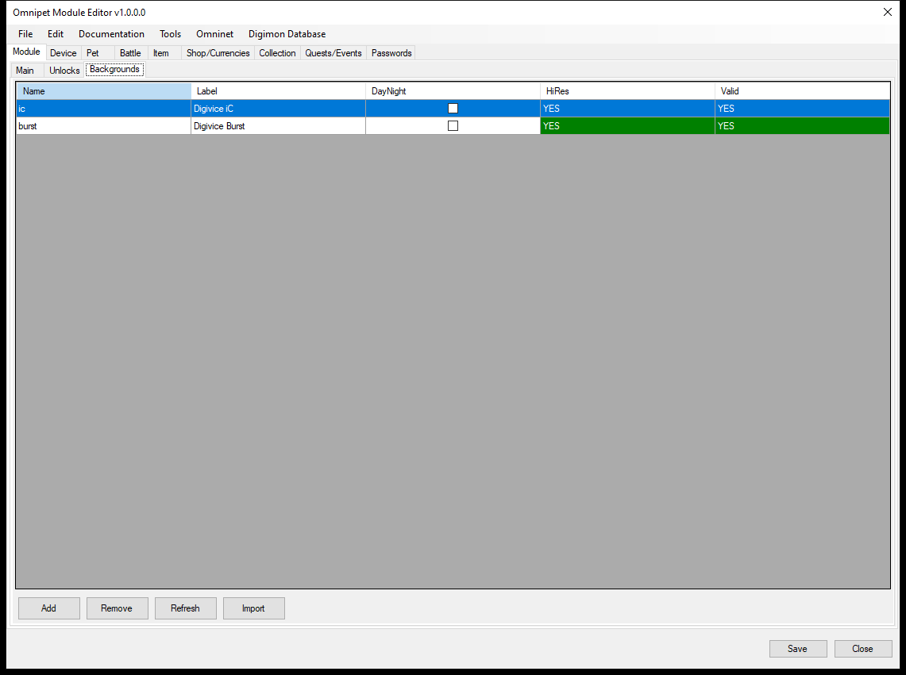
| Column | What it does | Values |
|---|---|---|
Namename | The file name without bg_. It must be exactly the Name of the unlock that grants the background. | Text |
Labellabel | The name the player sees. | Text |
DayNightday_night | The background has day, dusk and night images. | Checkbox |
| HiRes | Whether a high-resolution image exists. | YES (green) / NO (red) |
| Valid | Whether the images the row needs exist. | YES (green) / NO (red) |
Files live in the module's backgrounds folder: bg_<name>.png, or with DayNight
bg_<name>_day.png, _dusk.png and _night.png; the high-resolution
image adds _high (bg_forest_day_high.png). Add creates a row, Remove deletes one,
Refresh checks the files again, and Import fills a row from a PNG's name (it does not copy the file: put the PNG
in the folder first).
Device tab▼
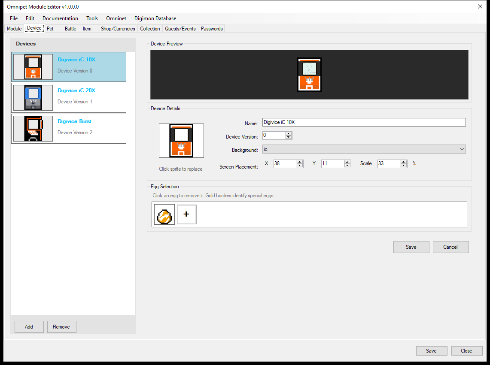
A device is the shell the player picks on the egg screen; one module may have several. The list shows each
device's picture, name and device version. Add creates "New Device"; Remove deletes the selected one and saves
at once. The form's Save writes devices.json; Cancel restores the stored values. A module with no
devices and no devices.json gets none written (it keeps the egg screen without devices).
| Field | What it does | Values |
|---|---|---|
Spritesprite | The device picture, drawn over its screen on the egg screen. Click the box to choose a PNG; it is copied into the module's devices folder, replacing a file of the same name. | PNG (shipped devices: 105x80) |
Namename | Caption under the device on the egg screen. | Text |
Device Versiondevice_version | The device's hardware version as it identifies itself over a connection, used by battle protocols and connection requirements. The hatched Digimon takes it. It is not the gameplay version. | 0-9999 |
Backgroundbackground | The module background shown in the device's screen; it also becomes the game background when none is set yet. | A module background, or blank |
Screen Placement X, Ybackground_x, background_y | Top-left corner of the screen inside the device picture, in its pixels. | -9999-9999 |
Scalebackground_scale | Size of the low-resolution background in the screen. | 1-100 % |
Egg Selectioneggs | The eggs offered once the device is picked: "+" adds a stage 0 pet, clicking an egg removes it. A gold border marks a special egg. A device with a single available egg hatches it directly. | Stage 0 pets |
Device Preview shows the result. A device appears on the egg screen when it has a background or a picture and at least one egg currently available.
Pet tab▼
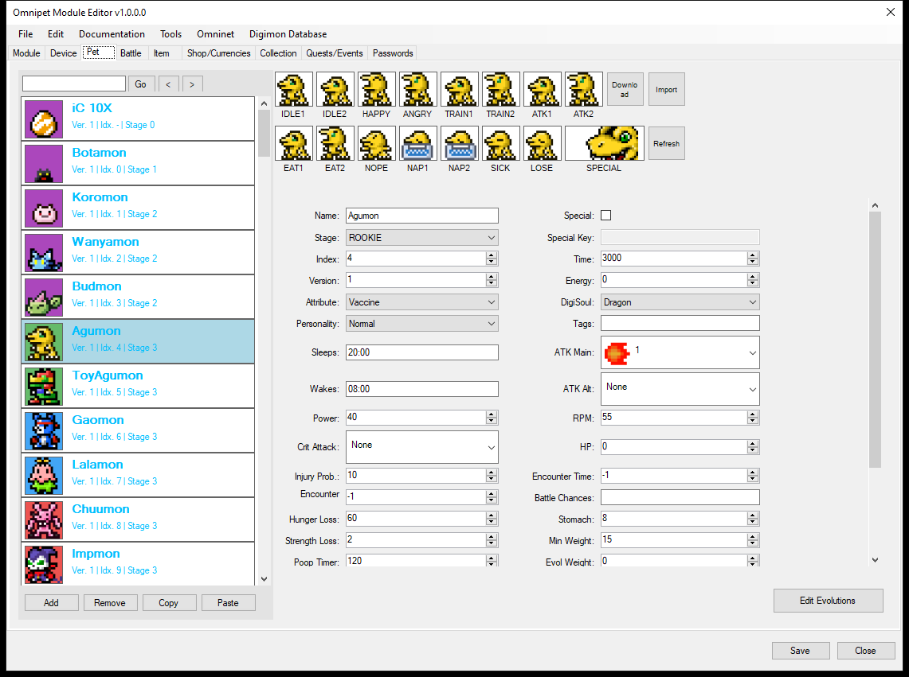
The list shows every Digimon of the module with its frame 0 sprite on its Attribute's colour (Data blue, Vaccine green, Virus red, Free purple) and "Ver. | Idx. | Stage". It is sorted by version, then Index, then stage and name. The search box with Go, < and > finds names containing the text.
| Button | What it does |
|---|---|
| Add | Opens Add Pet (below). The new pet is saved at once. |
| Remove | Deletes the selected pet after a confirmation and saves at once. Sprites, routes pointing at it and enemies of its name are left as they are. |
| Copy / Paste | Paste adds a duplicate of the copied pet (every field, same name and Index; its routes are copies) and saves at once. |
| Save / Cancel | Save stores the form and writes monster.json; Cancel restores the stored values. Save changes only what was edited: a value the form's lists or ranges do not offer (an attack id without a sprite, an unknown Attribute) is kept. |
| Edit Evolutions | Opens the evolution editor. |
Add Pet
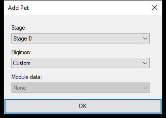
Stage picks the stage (Stage 0-8). Digimon lists "Custom" and the Digimon Database records of that stage (only Custom when the Database cannot be reached). The new pet starts from the stage's template; a Database Digimon also gets its name, Min Weight and Attribute. Module data, when the record has it, copies that module's data for the Digimon and downloads its sprite sets into the module.
Sprites
The strip shows frames 0-15 of the pet's sprite set: IDLE1, IDLE2, HAPPY, ANGRY, TRAIN1, TRAIN2, ATK1, ATK2,
EAT1, EAT2, NOPE, NAP1, NAP2, SICK, LOSE and SPECIAL. The set is found by name (<Name>_dmc,
as a folder of 0.png-15.png or a ZIP) in the primary format, then the secondary, then
the third; for each format the module's folder comes before the shared assets. An egg uses frames 0-2 only.
| Button | What it does |
|---|---|
| Download | Copies the pet's name and opens the DMC sprite database site (dmc-sprite-database.vercel.app). |
| Import | Copies <Name>_dmc.zip from the Windows Downloads folder into the module's folder of the primary format, replacing a ZIP of that name. |
| Refresh | Reloads the frames from disk. |
| SPECIAL box | Click to choose a PNG saved as frame 15 where the pet's sprites were found, which may be the shared assets. Frame 15 enables the special animation. |
Fields
| Field | What it does | Values |
|---|---|---|
Namename | The key everything joins on: evolution targets, enemies and Friend encounters name it exactly, and it finds the sprites. Renaming does not rename sprites or references. | Text |
Specialspecial | With Special Key: nothing evolves into this pet and no egg hatches it until that unlock is held. | Checkbox |
Stagestage | Evolution Stage (table below). Egg sets Stomach to 0. | Egg, Baby I, Baby II, Child, Adult, Perfect, Ultimate, Super Ultimate, Super Ultimate+ |
Special Keyspecial_key | The unlock's Name (Unlocks sub-tab). Enabled while Special is ticked. | Text |
Indexindex | The Digimon's number on the original device or card, per version; the game uses it to identify a connected device's Digimon. Eggs: -1 (disabled); -1 on another pet is none. | -1-9999 |
Timetime | Evolution timer in minutes: the pet can evolve on the timer once this much time has passed in the form. | 0-99999 |
Versionversion | The gameplay version (roster) the pet belongs to; it decides which evolutions and unlocks apply. Not the device version. | 0-100 |
Energyenergy | Maximum DP; DP is refilled to it on evolving. | 0-100 |
Attributeattribute | Battle advantage: Vaccine beats Virus, Virus beats Data, Data beats Vaccine; Free has none. | Free, Data, Virus, Vaccine |
DigiSouldigisoul | The Digimon's family on the Digivice iC (its Field in the Database): family weapons can be used only by their family, and the Status screen shows it. Empty: none. | empty, Beast, Bird, Machine, Water, Dragon, Insect, Holy, Dark |
Personalitypersonality | Vital Bracelet personality (the card's activity type). Not used by the game yet. | Stoic, Active, Normal, Indoor, Lazy |
Tagstags | Labels a route's Defeat Tag counts defeats of (PENGZ: G-Monster). | Comma-separated |
Sleeps / Wakessleeps, wakes | Bedtime and wake-up time. Hunger and Strength pause while the pet sleeps. Empty: none. | HH:MM |
ATK Mainatk_main | The regular attack sprite. Ids are the device's attack id + 1; 0 (None) is no attack. | None, 1...: atk/<id>.png of the module, else the shared assets |
ATK Altatk_alt | The alternate (big) attack sprite; None uses ATK Main. | Same list |
Powerpower | Base battle power; the Power Bonus Rule adds to it. | 0-300 |
RPMrpm | The shake rate the charge asks for on the RPM minigame (Digivice iC). 0 on every other minigame. | 0-999 |
Crit Attackatk_alt_2 | The critical attack sprite, shown when Enable Special Attack Sprite is on. | None, 1...: atk_crit |
HPhp | Hit points in a battle. | 0-100 |
Injury Prob.injury_probability | Base chance (%) that this form is injured after a lost battle. | 0-100 |
Encounter Timeencounter_time_group | The Schedule group (Quests/Events) whose times its scheduled encounters come at. -1: none. | -1-99 |
Encounter Opp.encounter_opponent_group | The pool of a pooled-encounter event it meets opponents from. -1: none. | -1-99 |
Battle Chancesencounter_chances | Vital Bracelet random battle: the chance (%) this character is met by a pet of its version at stage 1-4, 5-7 and 8. Each version's chances should total 100 per group. | "10/5/5"; "-" for none; empty if not on a card |
Hunger Losshunger_loss | Minutes per Hunger heart lost. Higher is slower. | 0-99999 |
Stomachstomach | Hunger hearts the pet holds; feeding past full is overfeeding. | 0-100 |
Strength Lossstrength_loss | Minutes per Strength heart lost. Higher is slower. | 0-99999 |
Min Weightmin_weight | Minimum Weight: the lowest weight the form can reach. | 0-100 |
Poop Timerpoop_timer | Minutes between poops. | 0-99999 |
Evol Weightevol_weight | Weight set on evolving into this form (0: kept). | 0-99 |
Condition Heartscondition_hearts | The form's condition hearts (with Care Condition Heart). | 0-100 |
Heal Dosesheal_doses | Medicines needed to cure a sickness or an injury. 0: the form can neither fall sick nor be injured (usual for Baby I only). | 0-100 |
Jogress Availablejogress_available | Stored but not read by the game: the jogress routes decide whether a pet can jogress. | Checkbox |
Availabilityavailability | Normal: an ordinary Digimon. Unobtainable: an enemy-only record. Friend: a special encounter whose defeat registers it as a Friend (DigiXros reads the Friends). | Normal, Unobtainable, Friend |
Starstar | Vital Bracelet stars (the Star power rule adds 16 each). | 0-99 |
Attackattack | Vital Bracelet AP: damage of a won round. | 0-99 |
Critical Turncritical_turn | Vital Bracelet: the round the critical hit lands on. | 0-99 |
| Stage | Evolution Stage |
|---|---|
| 0 | Egg (Digitama) |
| 1 | Baby I |
| 2 | Baby II |
| 3 | Child |
| 4 | Adult |
| 5 | Perfect |
| 6 | Ultimate |
| 7 | Super Ultimate |
| 8 | Super Ultimate+ |
Evolutions▼
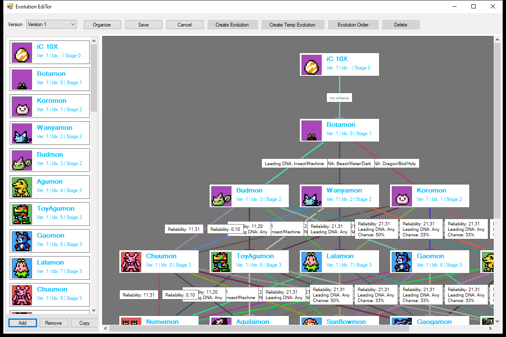
Edit Evolutions (Pet tab, or Edit > Edit Evolutions) opens the evolution editor for one version at a time. The canvas shows every Digimon reachable from that version's eggs, one row per stage; each arrow is an evolution route, with a box listing its requirements ("no criteria" for none). Several routes between the same two Digimon sit side by side. Temporary evolutions are dashed.
| Control | What it does |
|---|---|
| Version | The version shown. Changing it rebuilds the canvas and drops unsaved lines. |
| Organize | Lays the canvas out again. It moves boxes only, never the route order. |
| Save | Stores the routes of every Digimon on the canvas and closes. The main Save then writes monster.json. Each route keeps its place in the order (a new one goes last) unless Evolution Order moved it, and routes the canvas cannot draw (a target on another version or missing) are kept as they are. |
| Cancel | Closes without storing the lines (edits already saved in a requirements box stay). |
| Create Evolution | Click the source Digimon, then the target: a new route without requirements is added as the source's last. The mode stays on until clicked again. |
| Create Temp Evolution | The same for a temporary evolution. |
| Evolution Order | Click a Digimon to reorder its routes (below). |
| Delete | Click a line to delete that route, or a Digimon to take it and its lines off the canvas (the pet itself is kept). One deletion per click of the button. |
| Pet list | Drag a Digimon onto the canvas to add it; its routes to Digimon already on the canvas are drawn. |
Evolution Order
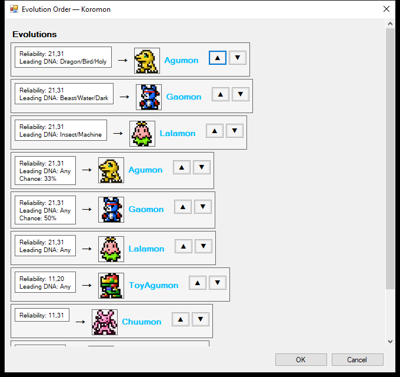
The window lists the Digimon's Evolutions and Temporary Evolutions, each in its own order, with ▲ and ▼ to move a route. The top route is tried first. OK applies the order to the canvas; the canvas Save keeps it.
Edit Evolution Criteria
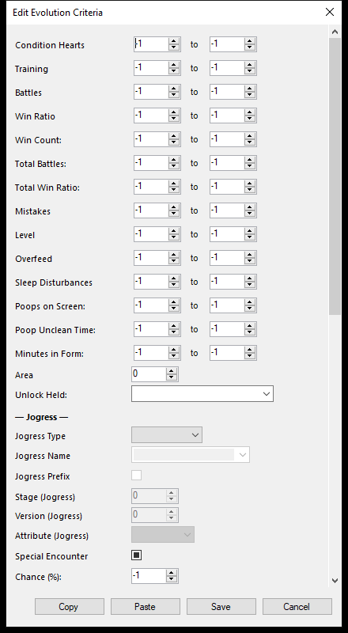
Click a route's box to edit its requirements. A range is "min to max", inclusive; -1 in the right box leaves the requirement out, and 999999 means no upper limit. 0 to 0 is an exact zero, not "unused". Copy and Paste move a whole set of requirements between routes. Cancel leaves the route exactly as it was.
| Field | What it does | Values |
|---|---|---|
Condition Heartscondition_hearts | Condition hearts. | Range |
Trainingtraining | The pet's effort (not a training count). | Range |
Battlesbattles | Battles in this form. | Range |
Win Ratiowin_ratio | Win percentage in this form; tested once the pet has fought. The module's Evolution Win Ratio Chance then rolls. | Range, 0-100 |
Win Countwin_count | Battles won in this form. | Range |
Total Battlestotal_battles | Battles over the pet's whole life. | Range |
Total Win Ratiototal_win_ratio | Lifetime win percentage. | Range, 0-100 |
Mistakesmistakes | Care mistakes. | Range |
Levellevel | The pet's level. | Range, 0-10 |
Overfeedoverfeed | Feedings while full. | Range |
Sleep Disturbancessleep_disturbances | Times woken or kept from sleep. | Range |
Poops on Screenpoops | Poops on screen when the route is checked. | Range |
Poop Unclean Timevirus | Virus: poops left past Care Poop Mistake Time over the pet's life. Tried at once and spent when taken. | Range |
Minutes in Formform_minutes | Minutes in the current form, asleep or awake. | Range |
Areaarea | This Digimon has won a battle in this adventure area or a later one. Progress cleared once for good belongs in Unlock Held instead. | 0 (unused) or an area |
Unlock Heldunlock | A module unlock the player holds, earned by any Digimon. | Unlock name |
Jogress Typejogress | Makes the route a jogress, which never happens on the timer. Single: two Digimon become one. Dual: each evolves by its own route. Jogress routes are first-match too: a named partner goes before the Attribute routes it also matches. A route in the oldest shape (stage and attribute without a jogress marker, PENZ) shows as Dual by attribute, and Save writes it in the current shape. | empty, Single, Dual |
Jogress Namejogress_name | The partner's name (or name start, with Jogress Prefix). | Pet name |
Jogress Prefixjogress_prefix | Matches the partner by the start of its name, any version. | Checkbox (Single only) |
Stage (Jogress)jogress_stage | The partner's stage. 0: any. | Number |
Version (Jogress)jogress_version | The partner's version. 0: this pet's. | Number |
Attribute (Jogress)jogress_attribute | The partner's Attribute, instead of a name. Across modules only these routes match. | empty, Da, Vi, Va, Free |
Special Encounterspecial_encounter | Ticked: beat a special encounter in this form. Empty: did not. Filled square: either. | Three states |
Chance (%)chance | Rolled after the other requirements; a failed roll falls through to the next route. -1: unused. | -1-100 |
At Death (%)at_death | A death route: tried only when the pet would die, taken instead with this chance. | 0 (unused)-100 |
Stage-5 ... Stage-9stage-5 ... stage-9 | Enemies of that stage defeated in this form. | Range |
Event Communicationevent_communication | Digimon Twin Event Communications. | Range |
Trophiestrophies | Trophies. | Range |
Vital Valuesvital_values | Vital Values. | Range |
Reliabilityreliability | Current Reliability. | Range, 0-31 |
DigiSoul DNAdigisoul_dna | The DigiSoul given most must be one of those checked. | Beast, Bird, Machine, Water, Dragon, Insect, Holy, Dark |
Weightweight | Current weight. | Range, 0-100 |
Quests Completedquests_completed | Quests completed on the module. | Range, 0-100 |
PVPpvp | Connection battles (Versus, Arena, DCom), won or lost. | Range |
Defeat Tag / Amountdefeat_tag, defeat_tag_amount | Defeats in this form of opponents carrying the tag (Pet tab, Tags); tried every minute. Amount unused: one. | Tag; range |
G-Cell Hatchgcell_hatch | The pet hatched from a G-Cell Fragment egg. | Checkbox |
Blue / Yellow / Red G-Cellsblue_gcells ... | The DMGZ meter's cells. | Range |
G-Cellsgcells | Cells of the module's G-Cell Style (PENGZ 0-14). | Range |
G-Cell Levelgcell_level | The DMGZ meter's level: 1 Blue, 2 Yellow, 3 and 4 Red. | Range |
Item / Item Amountitem, item_amount | An item used from the Armor / Item menu, that many uses; never on the timer. | Item; 1-999999 |
Time Rangetime_range | Real-clock window; an end before the start wraps past midnight. Fill both ends. | HH:MM to HH:MM |
Temporary Evolution Criteria
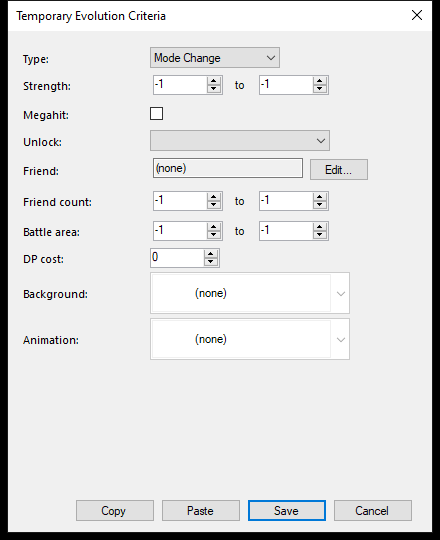
A temporary evolution (Mode Change or DigiXros) is a battle-only form: the pet takes it for one battle and reverts. Nothing should evolve into it and it needs no Special Key. Its requirements:
| Field | What it does | Values |
|---|---|---|
Typetype | How the form is presented. | Mode Change, Xros |
Strengthstrength | The pet's Strength range for the form to be offered. | Range |
Megahitmegahit | A condition met during the battle, not a gate before it. | Checkbox (Mode Change) |
Unlockunlock | A module unlock the player must hold. | Unlock name |
Friendfriend | Friends that must be registered (Edit... picks them). | Pet list |
Friend countfriend_count | How many Friends the module's list must hold (DMXW Shoutmon X7: Superior Mode, 13+). | Range |
Battle areabattle_area | The area of the battle: an adventure area of this module, or 0 for any other battle (events, special encounters, Versus, DCom). | Range |
DP costxros_cost | DP the form costs: offered only to a pet holding that much, spent as the battle starts (DMXW DigiXros: 1 for Shoutmon X2 up to 7 for Shoutmon X7). 0: free. | 0-999 |
Backgroundbackground | Background while the form is active. | Module background (Xros) |
Animationanimation | Animation played when the form is entered. | Module animation (Xros) |
Battle tab▼
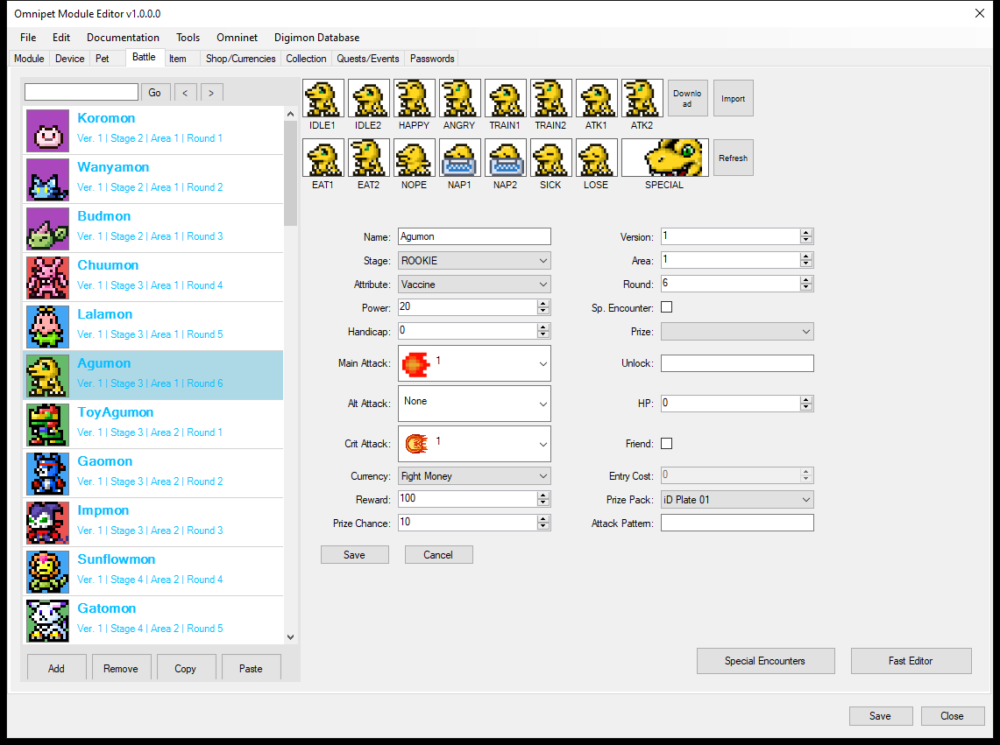
The Battle tab holds the module's adventure enemies and special encounters (battle.json). The
list shows "Ver. | Stage | Area | Round" (special encounters first, on amber). Add opens Add Enemy: pick a
version and one of its pets, whose name, stage, Attribute, Power, HP and attacks are copied, or "Custom". Add,
Remove, Paste and the form's Save write the file at once. The sprite strip is the same as on the Pet tab.
| Field | What it does | Values |
|---|---|---|
Namename | Must be a Digimon's name exactly: the sprite and a Friend's record are found by it. | Text |
Versionversion | The version roster. Each round uses the enemy of the pet's own version if there is one, otherwise a random version present on that round. | 0-999999 |
Stagestage | The enemy's stage; beating it counts for the Stage-N route requirements. | Egg ... Super Ultimate+ |
Areaarea | Adventure area. | 1-999999 |
Attributeattribute | Battle Attribute. | Free, Data, Virus, Vaccine |
Roundround | Position in the area; rounds are fought in order. A special encounter keeps its round: a battle run fights an area's special rounds in turn; a lone encounter is 1. | 1-999999 |
Powerpower | Battle power, weighed against the pet's for the hit rate. | 1-999999 |
Sp. Encounterspecial_encounter | A special encounter, outside the round sequence, started by events, items, cards or passwords. | Checkbox |
Handicaphandicap | Points taken off the hit rate of whoever attacks this enemy: a higher handicap makes it harder to hit. | 0-999999 |
Prizeprize | Item won. A win draws one prize among the round's enemies (items and packs), then rolls its chance. | Item or empty |
Main Attackatk_main | Regular attack sprite (attack id + 1). | None, 1... |
Unlockunlock | An unlock given when it is beaten: an adventure unlock when its battle clears the area, an encounter unlock for a special encounter or recruit. | Unlock name |
Alt Attackatk_alt | Alternate attack sprite. | None, 1... |
HPhp | Hit points. | 0-999999 |
Crit Attackatk_alt_2 | Critical attack sprite. | None, 1... |
Friendfriend | Beating it registers a Friend (a round enemy or a raisable recruit). A special encounter of an Availability "Friend" Digimon registers without it. | Checkbox |
Currencycurrency | The currency (Shop/Currencies tab) it charges and pays. | Currency or empty |
Entry Costcurrency_cost | Cost of entering its area, set on round 1 (Digivice iC Coliseums 0, 100, 500, 1000 P). | 0-999999 (round 1 only) |
Rewardcurrency_reward | Currency gained for beating it; a battle pays its largest reward once. | 0-999999 |
Prize Packprize_card_pack | A card pack won, drawn like Prize. | Card pack or empty |
Prize Chanceprize_chance | Chance (%) the prize drops once drawn. | 0-100 (100: always) |
Attack Patternattack_pattern | The attacks it throws, one per round, on the module's battle scale (Color: 1 normal, 2 super). Empty: the pattern from its stage and effort. | "1,2,2,2,2,1" |
Fast Enemy Editor and Special Encounters
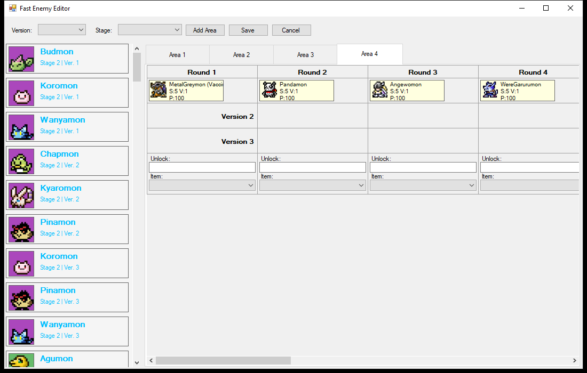
Fast Editor (or Edit > Enemy Editor) shows the adventure as a grid: one tab per area, one column per round, one row per version. Clicking a pet on the left (filtered by Version and Stage) places it in the first free round of its version; right-clicking a cell removes it. The Unlock and Item boxes under a round show the value its enemies share (empty when they differ, with the values in the box's tooltip); a box you change is written to every version's enemy of that round, an unchanged one only fills the enemies you added. A cell holding several enemies shows the first and "(+N)". Add Area adds the next area. Save writes the grid's enemies, plus any it cannot show (a version no pet with power has, an area or round below 1), unchanged; Cancel discards.
Special Encounters opens the same editor for special encounters. Clicking a pet adds it to the version's Round 1 cell, beside any encounter already there (the game meets one of a cell's encounters at random); right-click removes the first.
Update ATK Sprites
Tools > Update ATK Sprites copies ATK Main, ATK Alt and Crit Attack from each pet to every enemy of the same
name and writes battle.json. Image files are not touched.
Item tab▼
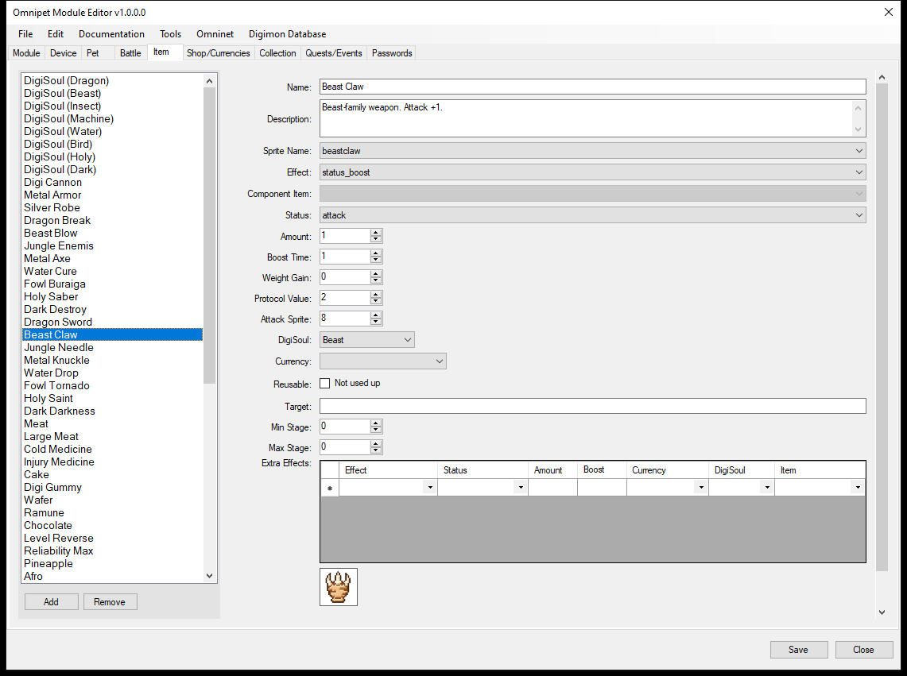
The module's items (item.json). A module's own items are used on its own Digimon only. Add creates
"New Item"; Remove deletes after a confirmation; Ctrl+C / Ctrl+V duplicate an item under a new id. The form's Save keeps the edits (selecting another item
discards them); the main Save writes the file. The icon below the form is items/<Sprite Name>.png.
| Field | What it does | Values |
|---|---|---|
Namename | Item routes, shops and other items refer to it by this name. A name containing "Digimental" is drawn as an Armor evolution. | Text |
Descriptiondescription | Inventory text. | Text |
Sprite Namesprite_name | The icon, a PNG in the module's items folder. A name with no file there is listed and kept. | File name |
Effecteffect | What using the item does (table below). | empty, status_change, status_boost, component, digimental, dna, currency, devolve, bedding, cure, accessory, closeup, evolve, random_evolve, encounter, bundle, multiplier, training_limit |
Component Itemcomponent_item | component: the item crafted from Amount copies. | Item (component only) |
Statusstatus | The stat, ailment, slot or gain the effect works on. | hunger, strength, hp, attack, xai_roll, skip_to_boss, exp_multiplier, armor, power, vital_values, timer, dp, reliability, injury_rate, sick, injury, head, face, aura, pp, bp, ap, vp, "pp,bp,ap,hp" |
Amountamount | Size of the change or boost; component: copies per craft. | 0-9999 |
Boost Timeboost_time | status_boost with Battle Item Use area: the areas it lasts (battles, without sequential rounds). multiplier: minutes. 0 is not permanent: a status_boost ends at its first countdown, a multiplier at once (the report flags a status_boost below 1). | 0-9999 |
Weight Gainweight_gain | Weight added or removed on use, whatever the effect. | -99-99 |
Protocol Valueprotocol_value | The value a battle item sends in the DigiROM while active (Digivice iC). 0: none. | 0-255 |
Attack Spriteattack_sprite | Attack sprite thrown while the boost is active. 0: the pet's own. | 0-999 |
DigiSouldigisoul | dna: the DigiSoul fed (Amount of it). status_boost: only Digimon of that family can use it. | empty, Beast, Bird, Machine, Water, Dragon, Insect, Holy, Dark |
Currencycurrency | currency: the currency paid, Amount of it. | Currency |
Reusablereusable | Not used up on use. | Checkbox |
Targettarget | evolve: the Digimon it becomes (pet's version). encounter: the special encounter fought. | Name |
Min Stage / Max Stagemin_stage, max_stage | Stages that can take the item. 0: no limit. | 0-9 |
Extra Effectsextra_effects | More effects applied after the main one: Effect, Status, Amount, Boost, Currency, DigiSoul, Item. | Effects status_change, status_boost, dna, currency, devolve, item |
| Effect | Uses | In the game |
|---|---|---|
| empty | Status hunger or strength, Amount | A food. |
| status_change | Status, Amount | Changes a stat: hunger and strength as food; hp, attack and power permanently up to the module's caps; dp, timer, vital_values, reliability, injury_rate. |
| status_boost | Status, Amount, Boost Time, DigiSoul, Protocol Value, Attack Sprite | A battle item, chosen before a battle, not from the inventory. |
| component | Amount, Component Item | Crafts one Component Item. |
| digimental | Used from the Armor / Item menu by Digimon whose route names it. | |
| dna | DigiSoul, Amount | Feeds DigiSoul. |
| currency | Currency, Amount | Pays currency. |
| devolve | Returns the pet to the form it evolved from. | |
| bedding | Amount (minutes) | The pet sleeps, is healed and loses one care mistake. |
| cure | Status sick, injury or empty | Heals that ailment (empty: either). |
| accessory | Status head, face or aura | Puts the accessory on or off. |
| closeup | Brings the Digimon up close. | |
| evolve | Target, Min/Max Stage | Evolves the pet into Target. |
| random_evolve | Evolves into a random next form of the pet's routes. | |
| encounter | Target | Starts that special encounter. |
| bundle | Extra Effects rows of effect item | Gives Item x Amount for each row. |
| multiplier | Status pp and/or vp, Amount (factor), Boost Time (minutes) | Multiplies those gains for a time. |
| training_limit | Listed only; the game refuses it. |
Shop/Currencies tab▼
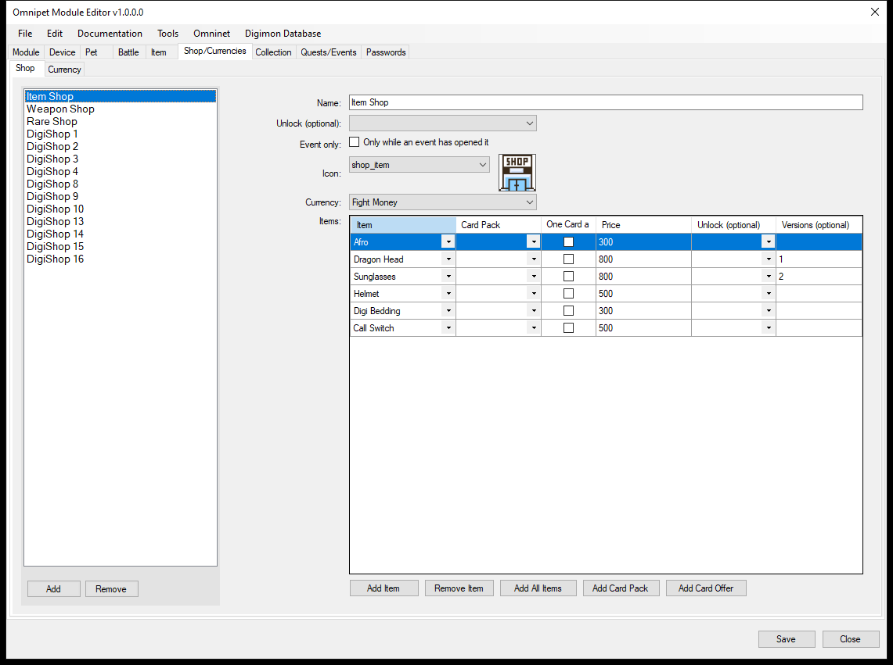
Shops and currencies (shop.json), in two sub-tabs. Edits are kept as the selection moves. Items
and unlocks come from the Item and Module tabs, saved or not; card packs from the Collection tab. A module
without shops or currencies gets no file.
Shop
| Field | What it does | Values |
|---|---|---|
Namename | The shop's name in the game; events open it by this name. | Text |
Unlock (optional)unlock | The shop is listed once this unlock is held. Empty: always open. | Unlock |
Event onlyevent_only | Hidden until a ShopAccess event (Quests/Events) opens it, for good, for a time or for one visit. | Checkbox |
Iconicon | The shop's icon, from the module's icons folder. | PNG name (48x48) |
Currencycurrency | The currency every price is paid in. | Currency |
Itemsitems | The lines on sale: Item or Card Pack, One Card a Day, Price, Unlock (optional), Versions (optional, "1, 2": only while the party holds a pet of the module on one of them). | Grid |
Add Item adds the first item not listed, Add All Items every one, Remove Item the selected lines. Add Card Pack sells a pack, opened when bought. Add Card Offer adds a One Card a Day line: one card of the pack, a different one each day and the same all day, priced by rarity as "Common 500, Rare 1500, Legendary 5000". Other prices are whole numbers.
Currency
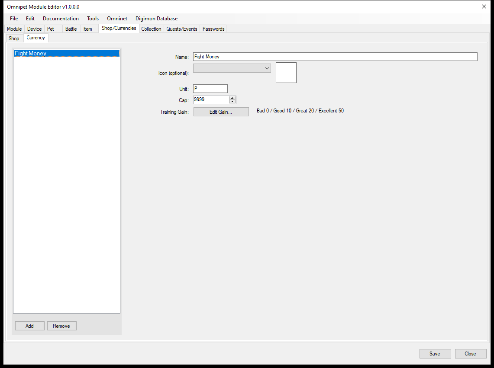
| Field | What it does | Values |
|---|---|---|
Namename | Shops name their currency by it; renaming it here renames it in the shops. | Text |
Icon (optional)icon | Icon from the icons folder. | PNG name |
Unitunit | Written after an amount (100P). | Text |
Capcap | The most a player can hold; earnings past it are lost. 0: no limit (Digivice iC 9999). | 0-999999999 |
Training Gaintraining_gain | Paid for each training result, once per training, at the best result. | Bad, Good, Great, Excellent (0-999) |
Collection tab▼
The module's cards, what reading them does, and card packs (cards.json; art in the module's
cards folder). In the game they appear on the CARDS screen. A card is read for one Digimon of its
module, whose version picks version-specific effects.
Cards
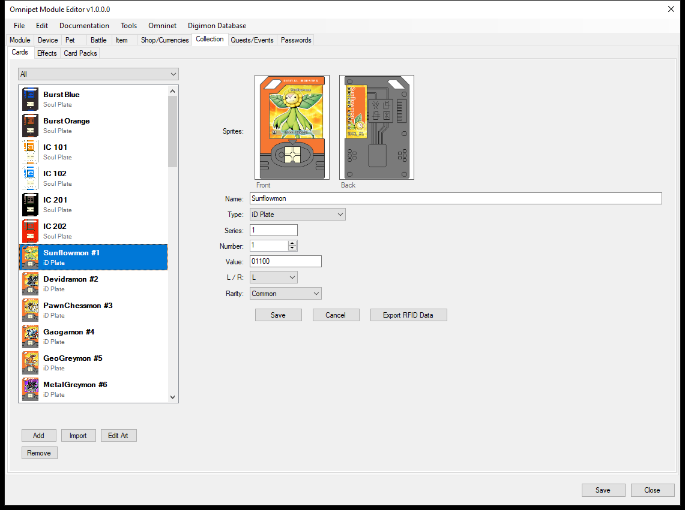
The filter shows one card type. Add asks for the type; Remove deletes the card (its art files at once). Import reads card ZIPs made with the Digimon Database card maker (Soul Plate, iD Plate, DDP Chip), asking before replacing a card with the same id. Edit Art opens the card in the card maker. The form's Save keeps the edits; Export RFID Data saves the card's tag data as JSON. Click Front or Back to upload art.
| Field | What it does | Values |
|---|---|---|
Front / Backsprites | Card art. All DDP Chips share one back, cards/DDP Chip_back.png; Save writes it as the back of every DDP Chip that has none, as the game reads each card's own. | Soul Plate 125x275, iD Plate 205x325, others 250x350 |
Namename | Name in the album ("???" until owned). | Text |
Typetype | Soul Plates are read by DigiSoul Charge, other cards by Plate Charge. A Collectible is only viewed. | Soul Plate, DDP Chip, iD Plate, Custom, Collectible |
Seriesseries | Printed series; iD Plates sort by it. | Text |
Numbernumber | Number within the series. | 0-9999 |
Valuevalue | The binary the card carries; Effects match it. | 1-10 digits of 0/1 |
L / Rlr | iD Plate side-button state. | L/R, L, R |
Rarityrarity | Sets the default odds in packs (Common 70, Rare 25, Legendary 5) and the One Card a Day price. | Common, Rare, Legendary |
Effects
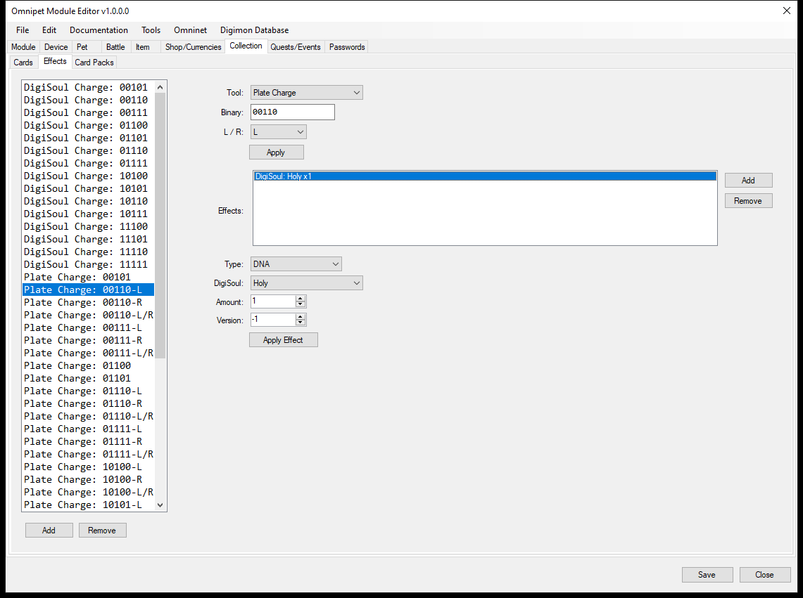
An effect group says what reading a value does. Select a group, change it and press Apply; select one of its effects, change it and press Apply Effect.
| Field | What it does | Values |
|---|---|---|
Tooltool | The menu that reads the card. | Any, Plate Charge, DigiSoul Charge |
Binaryvalue | The value the group answers to. | 1-10 digits of 0/1 |
L / Rlr | Restricts to a side-button state (5-digit values only). | Any, L, R, L/R |
| Effects: Type | Item: gives Item x Amount. DNA: feeds DigiSoul (X of each: all eight). Encounter: starts the special encounter at Area and Round. Unlock: grants the unlock. | Item, DNA, Encounter, Unlock |
Versionversion | Applies only for a Digimon of that version. -1: every version. | -1-99 |
Card Packs
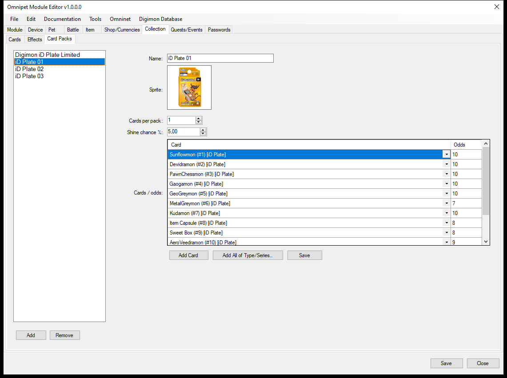
| Field | What it does | Values |
|---|---|---|
Namename | The pack's name in shops. | Text |
Spritesprite | Pack art (click to set). | PNG |
Cards per packcards_per_pack | Cards in one pack; each is drawn on its own, so duplicates happen. | 1-99 |
Shine chance %shine_chance | Chance a drawn card is shiny (Soul Plates never are). | 0-100 (0.05: 1 in 2000) |
Cards / oddscards | The cards and their weights (not percentages). Add Card, or Add All of Type/Series..., then Save. | Grid |
Tools > Import Collection from Module copies another module's cards, effects and packs (and their art) into this one, asking once whether to replace entries that already exist.
Quests/Events tab▼
Four sub-tabs: Quests (quests.json), and Events, Connect Points and Schedule
(events.json).
Quests
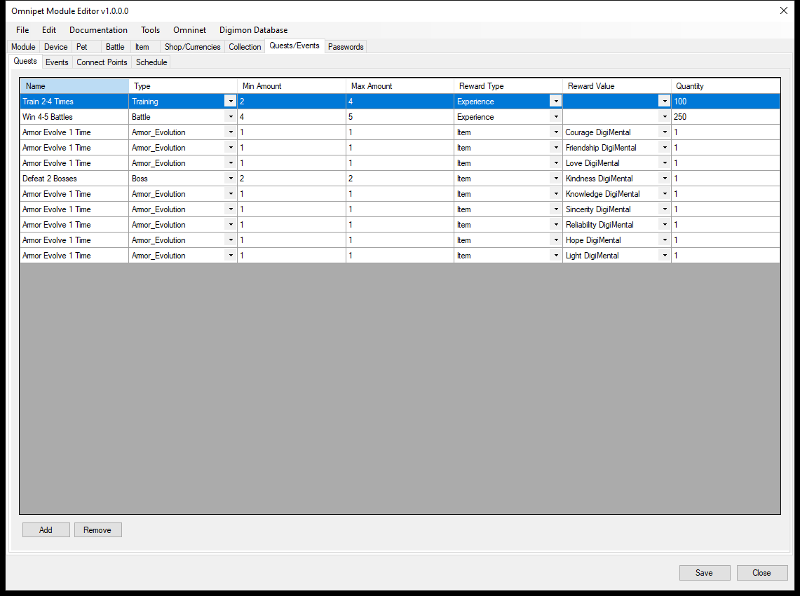
Three quests are offered each day from the modules in the party.
| Column | What it does | Values |
|---|---|---|
Namename | Written by the editor from the type and amounts. Only a Daily Gift shows its own name in the game. | Read-only |
Typetype | What the player must do. Daily_Gift asks nothing: one of the module's gifts fills a daily slot, ready to claim. | Boss, Training, Battle, Feeding, Evolution, Armor_Evolution, Jogress, Daily_Gift |
Min Amount / Max Amounttarget_amount_range | The target; the game uses Min or Max. | Whole numbers |
Reward Typereward_type | Item gives the Reward Value item; Experience, Trophy and Vital Values add Quantity to the party. | Item, Trophy, Experience, Vital_Values |
Reward Valuereward_value | The item given (Item rewards). | Item |
Quantityreward_quantity | How much is paid. | Number |
Events
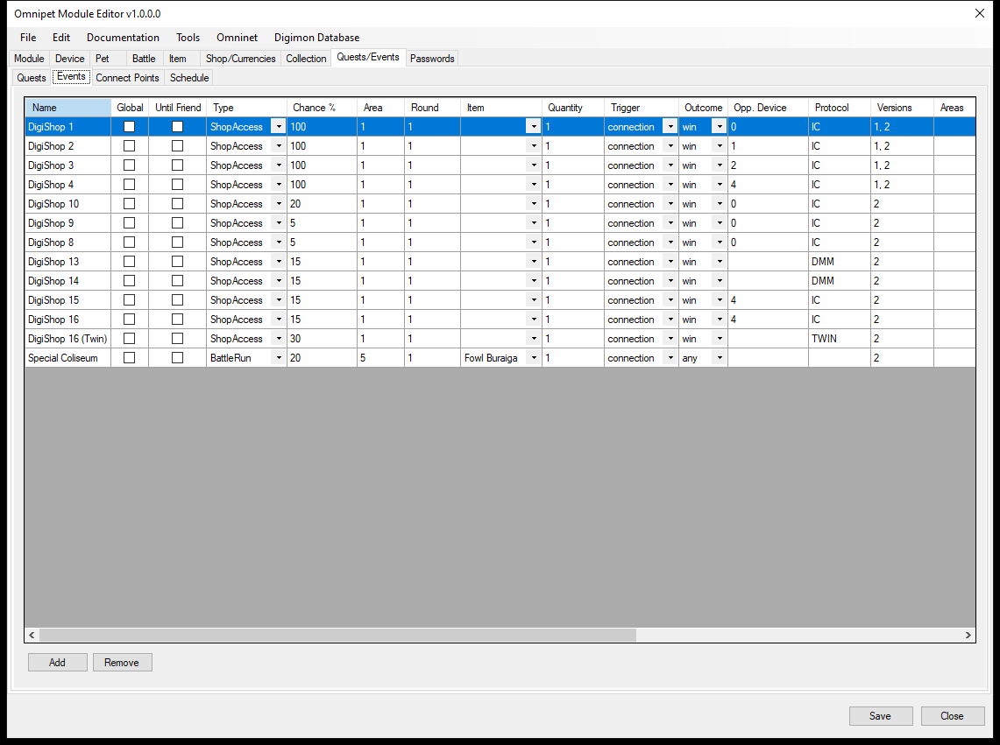
| Column | What it does | Values |
|---|---|---|
Namename | Shown when the event fires. | Text |
Globalglobal | A random event that also fires when the player is not raising this module's Digimon. | Checkbox |
Until Frienduntil_friend | EnemyBattle: stops once its Digimon is a Friend. | Checkbox |
Typetype | What the event does (table below). | EnemyBattle, ItemPackage, FriendBattle, PoolBattle, BattleRun, ShopAccess, CardBattle |
Chance %chance_percent | Random trigger: a weight among the module's random events (keep the total at 100 or less). Battle triggers: a chance in 100. With Draw: its share of 100. | Number |
Area / Roundarea, round | EnemyBattle: the special encounter fought. BattleRun: the area run. | Numbers |
Item / Quantityitem, item_quantity | ItemPackage: the item given. BattleRun: the reward. | Item; number |
Triggertrigger | random (empty): the idle roll. adventure, area_clear, connection: after that battle. schedule: at the Schedule times of the pet's Encounter Time group. | empty, random, adventure, area_clear, connection, schedule |
Outcomeoutcome | Battle triggers: after a win (default), a loss or any battle. | empty, win, loss, any |
Opp. Deviceopponent_device_version | connection: the other side's device version. -1: any but the pet's own. | Number or empty |
Protocolprotocol | connection: the battle format it must be fought on (device numbers repeat across formats). | Text, e.g. IC, DMM |
Versionsversions | The pet versions the event is for. Empty: all. | "1, 2" |
Areastrigger_areas | adventure, area_clear: the areas whose battles roll it. Empty: any. | "8, 9" |
Shopshop | ShopAccess: the shop opened (mark it Event only). | Shop name |
Access Minaccess_minutes | ShopAccess: 0 for good, N minutes, -1 one visit. | Number |
Drawdraw | Events sharing a draw name are one roll: at most one of them happens. | Text |
Reward Roundreward_round | BattleRun: the round after which Item is paid. 0: after the last. | Number |
Delaydelay_minutes | FriendBattle after a battle: minutes it is held back. | "1-5" |
Pool Field / Poolspool_field, pools | PoolBattle: the monster field that picks the pool, and each pool's special encounters in turn. | Field name; Pools dialog |
Item Sequenceitem_sequence | CardBattle: the item each win pays in turn. | Item Sequence dialog |
| Type | What it does |
|---|---|
| EnemyBattle | Fights the special encounter at Area and Round. |
| ItemPackage | Gives Item x Quantity. |
| FriendBattle | Fights a Friend a party Digimon of the module still needs. |
| PoolBattle | Fights the next encounter of the pool the pet's Pool Field selects. |
| BattleRun | Fights every special round of Area in turn; Item is paid after Reward Round. |
| ShopAccess | Opens an Event only shop. |
| CardBattle | Vital Bracelet random battle: an opponent of the pet's version by its Battle Chances; each win pays the next item of Item Sequence. |
Connect Points
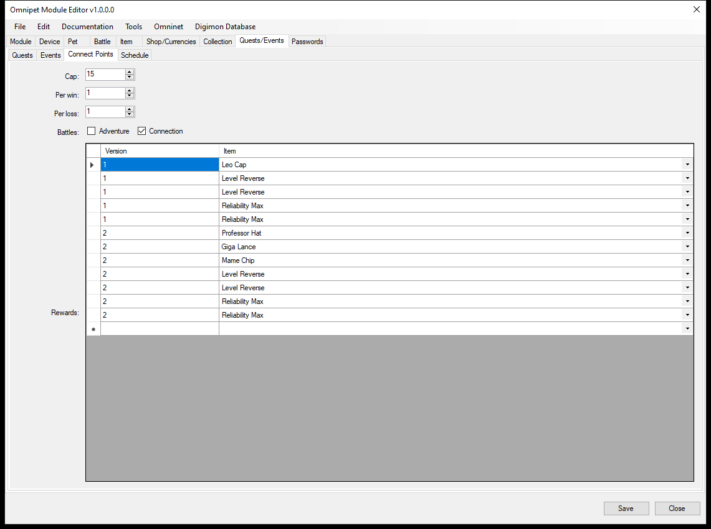
Each pet earns points for battles; when they reach the cap it draws one reward of its version and starts again from 0. The points are kept through evolution.
| Field | What it does | Values |
|---|---|---|
Capcap | Points that fill the meter (Digivice iC 15). 1: a drop table rolled after every battle that counts, with no meter. 0: off. | 0-9999 |
Per win / Per losswin, loss | Points for a won or lost battle. Per loss 0 with Cap 1: only wins roll. | 0-9999 |
Battlesbattles | The battles that give points: Adventure, Connection (another device or pet: DCom, Versus, online). | Adventure, Connection (default) |
Rewardsrewards | Version (empty: every version) and Item. Every listed reward is equally likely; list an item twice to double its chance. "(no item)" is a draw that gives nothing (the Vital Bracelets: 56 in 100, so 44% of counted wins drop an item). | Grid |
Schedule
Time Group and Times (HH:MM, comma-separated): the minutes of each day a schedule-triggered event can fire for the Digimon whose Encounter Time names the group (the Godzilla devices). Write times with two digits ("07:05").
Passwords tab▼
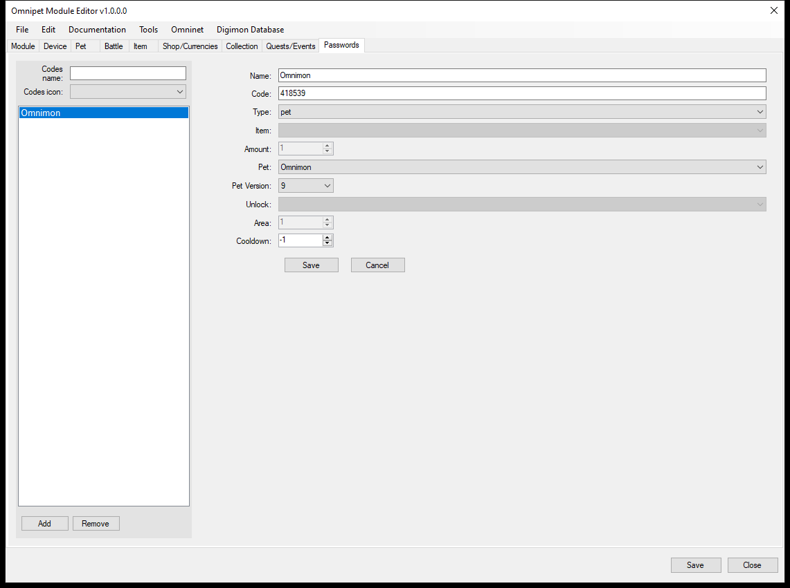
Codes the player types in the game's Specials menu (codes.json), offered while a Digimon of the
module is in the party. Codes use 0-9 and A-Z, up to 10 characters. Only the fields of the chosen type are
enabled.
| Field | What it does | Values |
|---|---|---|
Codes nametitle | What the Specials menu calls the module's codes. Empty: Password. | Text |
Codes iconicon | Specials menu icon from the icons folder. Empty: a keypad. | PNG name |
Namename | Label in the editor and the module guide; the player never sees it. | Text |
Codecode | What the player types. | Letters and numbers |
Typetype | item: adds Item x Amount. pet: adds Pet of Pet Version to the party (or the Freezer); it cannot enter PvP. unlock: grants the unlock. encounter: starts the special encounter at Area, round 1. | item, pet, unlock, encounter |
| Item / Amount | item type. | Item; 1-9999 |
| Pet / Pet Version | pet type. | Pet; its versions |
Device Versiondevice_version | pet type: the hardware the pet counts as (a Device tab device version), which battle protocols key off; a Copymon is a doll of a Digimon from another device. -1: the pet's own. | -1-999999 |
| Unlock | unlock type. | Unlock |
| Area | encounter type. | 1-9999 |
Cooldowncooldown | Minutes before the code works again. 0: no wait. -1: once only. | -1-999999 |
Report and documentation▼
Module Report
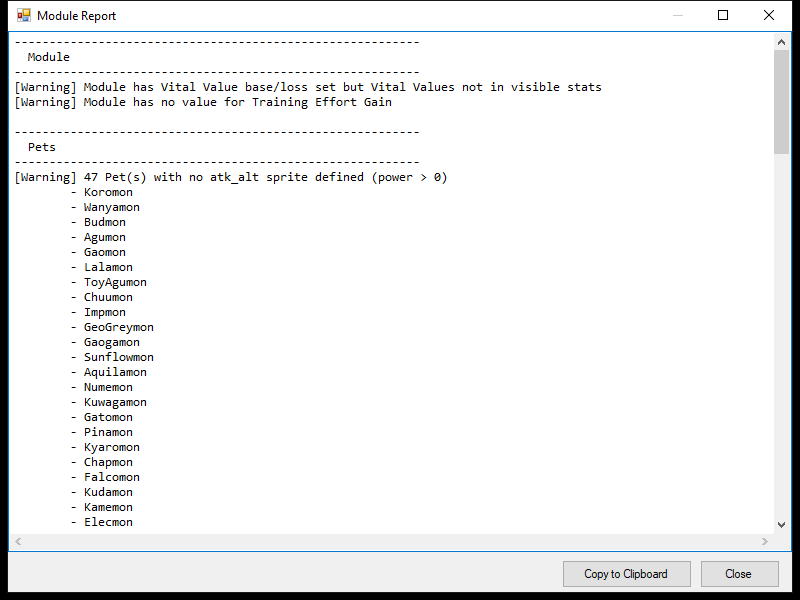
Tools > Module Report (Ctrl+R) saves every tab, then checks the saved files. Each line is an [Error], [Warning] or [Info] with the entries it concerns; Copy to Clipboard copies the text. A file that cannot be read is treated as empty without a message.
| Section | What it checks |
|---|---|
| Module | Name, flag, battle icon and enemies with Adventure Mode, version, author, description, visible stats against G-Cells, Vital Values and Reliability, training effort, battle cost. |
| Unlocks | adventure unlocks without an area or with an area missing from the Battle tab, egg unlocks without a version or egg, missing labels, unknown card rewards. |
| Backgrounds | Missing images, high-resolution images, names without an unlock, labels. |
| Devices | No devices (an [Info]: a module without devices keeps the egg screen without them); devices sharing a device version. |
| Pets | Duplicates, missing names, attacks, HP and sprites, incomplete frames, Special without a key or with an unknown key, eggs without evolutions, routes to missing Digimon or unknown unlocks, routes asking for training or G-Cells a Digimon cannot earn, routes without requirements, orphans, evolutions to a lower stage. |
| Battle | Enemies without power, name, sprite, HP or attack; stage 0 enemies; rounds no earlier round leads to; unknown unlocks; versions without pets. |
| Items | Names, icons, effects and their status, amount, boost time (a status_boost below 1 is an error), currency, target and extra effects. |
| Shops/Currencies | Names, currencies, items and packs sold, prices, unlocks, icons, enemy costs and rewards. |
| Card Pack Rewards | Unknown packs and prize chances. |
| Collection | Card ids and values, effect values and tools, unknown items, unlocks and cards, missing art, empty packs. |
| Quests/Events | Quest amounts and rewards; event triggers, outcomes, items, encounters, shops, pools, Battle Chances and random-event chances. |
Create Documentation
Documentation > Create Documentation (Ctrl+G) writes the module's guide into its documentation
folder from the saved files, so save first. Pages are overwritten; nothing is deleted. Open Documentation
(Ctrl+Shift+G) opens documentation/index.html. The guide links to the module's images, so it works
inside the module folder; the Module Guide links to each installed module's
guide.
| Page | Contents |
|---|---|
| Module Info | Logo, name, version, author, category, description and the module settings. |
| Unlocks | Each unlock and how to earn it. |
| Backgrounds | Each background's images. |
| Devices | Each device with its screen and eggs. |
| Charts | One evolution chart per version, with each route's requirements and each Digimon's details. |
| Enemies | Every area and round, with prizes, fees and rewards. |
| Items | Every item, then the shops. |
| Collection | Cards, effects and card packs (listed when the module has any). |
| Quests & Events | Quests, events, Connect Points and the encounter schedule. |
Export Sprites and Generate Pet Index
Tools > Export Sprites (Ctrl+E) asks for a folder and writes
<module name>/<monsters|monsters_dot|monsters_hidef>/<Name>_dmc.zip for every
pet and enemy, taking the first set found (module or shared assets), then lists the names it could not find.
Tools > Generate Pet Index renumbers Index for every pet in list order, from 0 within each version (eggs -1),
and writes monster.json at once.
Omninet▼
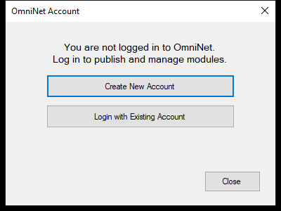
Account
Omninet > Account opens the account window. Logged out it offers Create New Account (nickname, e-mail,
password, then a code sent by e-mail) and Login with Existing Account (e-mail and password, then a code). Logged
in it shows the nickname and e-mail with Link Game Device (a 4-character code for the game's Link Device
button, valid 5 minutes), Logout and Close. The session is kept in %APPDATA%\OmnipetModuleEditor
and checked each time a module opens.
Manage Module
Omninet > Manage Module (logged in) saves every tab and checks the module's name and Version with Omninet. A free name offers Publish New; a module you own or contribute to offers Update Module, Unpublish (owner only) and Contributors; a name owned by someone else cannot be published.
| Publishing needs | Uploaded |
|---|---|
logo.png and Flag.png; BattleIcon.png and at least one adventure enemy with Adventure Mode; at least one pet. | The whole module folder as a ZIP, with the name, version, description and category read from its module.json. |
Module Library
Omninet > Module Library lists every published module (no login needed) with Author, Category, the installed and Omninet versions and your Ownership. Download, Update or Reinstall installs a module into the modules folder; the module open in the editor cannot be replaced.
Digimon Database menu▼
These actions save every tab, read the public Digimon Database (kept in memory until the editor closes) and show a report. Apply writes the change and reloads the tabs.
| Menu item | What it does | Writes |
|---|---|---|
| Record Match | Lists which Database record each pet and enemy name matches, and the names that match none. | Nothing |
| Validate Digimon Names | Lists names that differ from the Database's English name. | Nothing |
| Normalize Digimon Names | Renames pets, route targets and enemies to the Database's English names, and the module's own sprite ZIPs with them. | monster.json, battle.json (Apply) |
| Import Min Weight | Lists pets whose Min Weight differs from the Database's. | monster.json (Apply) |
| Update Local Sprite Database | For the module's primary and secondary formats, downloads the Database sheet of every matched Digimon whose shared sheet is missing or differs. | The game's shared assets sprite folders |
See also the Manual, the Module Guide and Troubleshooting.